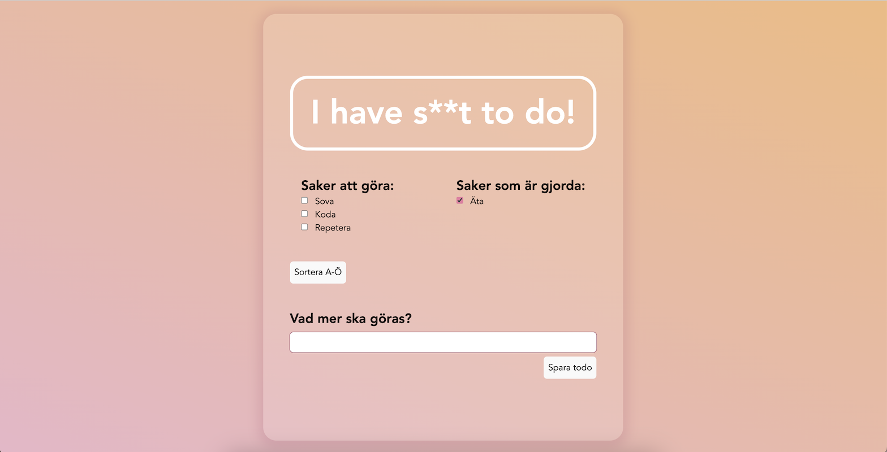
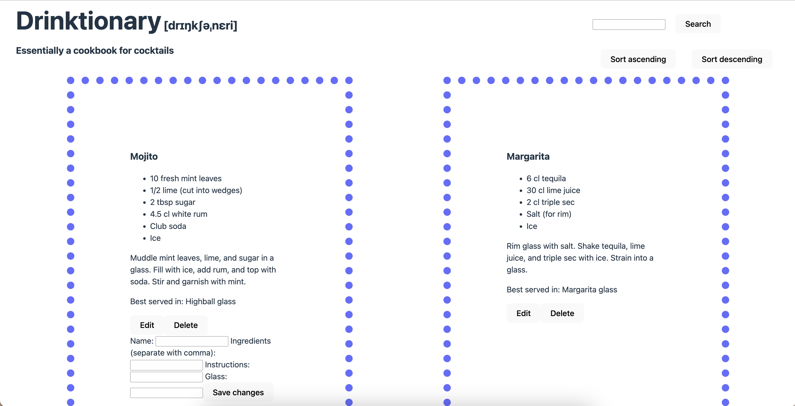

Mitt första React-projekt med Vite - den senaste tolkningen av många to-do-appar. Använde även TypeScript och Tailwind CSS.

Ett crud-API byggt med Express och MongoDB. Drinkrecept kan läggas till, redigeras och tas bort direkt från frontend. Filtrering och sortering av drinkrecepten sker på serversidan.

Min första to-do-app. Skrevs i vanilla JavaScript med Vite och brukar localstorage - jag använder den fortfarande för att hålla ordning på grejer.

Ett väldigt tidigt sidoprojekt jag petade med för att träna på HTML och CSS.

Även detta ett tidigt övningsprojekt - här tränades flexbox!

Jag har tränat mycket på att hämta data från API:er och rendera HTML baserat på datan - här med hjälp av OmDB:s API.